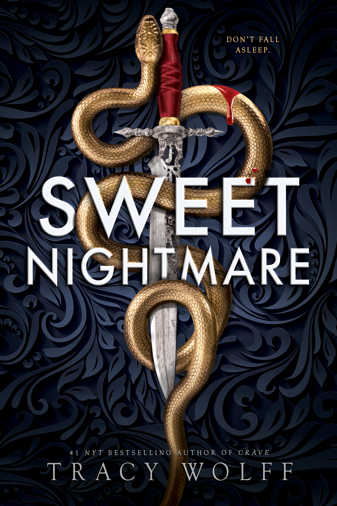

Posted on {{ date | date: "%B %d, %Y" }}
{% include "_partials/_netgalley.html" %}
Title: Sweet NightmareThe instant New York Times bestseller
"This beguiling series opener...checks all the boxes for romantasy veterans." – Publishers Weekly
The scariest school on earth Is about to experience real fear...
Most schools are about being the best. This school? It’s about being the worst. Calder Academy is where the rogue paranormals go. The ones who break the rules or lose control. And when that happens for
I should know. Because I’m trapped here.
Look, every seventeen-year-old girl thinks their mom is a tyrant. But mine just happens to run Calder Academy, which paints a giant target on my back. The way I make it through these dark halls is by steering clear of the things—and kids—who go bump in the night.
Especially Jude Abernathy-Lee
But when a freak storm hits our isolated island, I'm stuck without a backup plan. The power is gone. The lights are out. And our worst nightmares are suddenly real—and out for blood.
Now the only way to survive is to align myself with one evil to avoid the other.
And the only thing worse than the idea of getting close to Jude? Secretly loving every minute of it.
So I was approved for Sweet Nightmare back in 2024, but I didn’t get around to reading it until now. Part of this was because I’d tried out the Crave series and it just wasn’t for me. Unfortunately, I’d tried the Crave series after I’d been approved for Sweet Nightmare, so I decided not to bother reading it, figuring Tracy Wolff wasn’t the author for me. Well, I was wrong.
As with many of the books I’ve had issues getting into on NetGalley that have already been released, I found that listening to the audiobook helped me immensely. I really liked the main narrator – Suzy Jackson, and I was impressed with Andrew B. Wehrlen as well, although we didn’t get to hear him nearly as much as we did Ms. Jackson. Both narrators did their jobs well and did not detract from the story at all.
The characters in this book are fun to read about. Despite all of them being magical creatures in human form, each of the characters brings their own issues, struggles, and unique perspectives to the book – even if we do get the majority of the book from Clementine’s perspective.
I love books that take place in boarding schools, magic academies, etc. Add to this a creepy island and a hurricane? You’ve got an amazing backdrop for a book that is going to make you want to actually be there – well… most of the time.
When I tried reading Crave, I could not get into Ms. Wolff’s writing style. For some reason, it just bugged me and I couldn’t do it. I couldn’t read the book. But the writing style in Sweet Nightmare was easy to listen to and easy to read as well (I’d started with a an eBook and decided to try the audiobook for giggles). I may have to try Crave again sometime in the future when I’m not so busy.
A reform school for paranormal beings plus a mysteriously strong hurricane plus characters with secrets even they don’t know about? Now that’s a great plot for a book. I have to admit, at first it didn’t sound good, but the more I listened the more it worked. Now I want to read Sweet Chaos. Too bad my library doesn’t have it… because it isn't out yet.
This book will keep you wondering what’s happening next. There are twists, turns, and things that I’d never have guessed were going to happen. I mean, how would you honestly predict some of these things? Seriously…
The relationship between Clementine and Jude is the main focus of Sweet Nightmare when it comes to relationships, and let me tell you, that relationship is a doozy. You can feel the pain, frustration, and misery that rolls off these two characters as they try to navigate their rocky relationship.
I think the ending for this one was a good one. The epilogue clearly left it open for the sequel, so there was no question that there would be one, even if I hadn’t already known what the sequel was. Again, now I really want to read/listen to Sweet Chaos.
I gave this 4 stars and I would highly recommend it to anyone looking to try out Tracy Wolff’s novels.